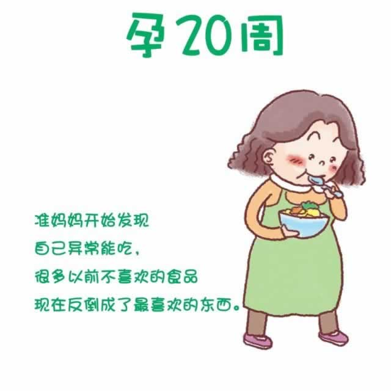

现在，你能感觉到十分规律的胎动了。一般说来，正常的明显胎动每小时不少于3~5次，12小时约为30~40次。只要是有规律、有节奏、没有大变化，即可证明胎儿的发育是正常的。
随着孕期的继续推进，你新的烦恼随之而来。由于油脂分泌的增加，你会长痤疮，或者原有的痤疮变得严重了。如果是这样，请用温和的香皂或洗面奶彻底清洁皮肤，并使用不含油脂的护肤品。在咨询医生之前，不要擅自使用任何口服或外用的痤疮药品。
此外，因为怀孕给腿部静脉带来更多压力，孕酮的增加导致血管壁松弛，你可能会出现静脉曲张（血管肿胀）。睡觉时采取侧卧睡姿，在脚下垫个枕头，会降子宫对腿部和脚部的静脉压力。也可以试着穿孕妇专用的医用循环减压弹力袜，这种专用的弹力袜可以从脚踝开始，顺着腿部向上，逐级减轻腿部受到的压力，从而缓解静脉曲张。